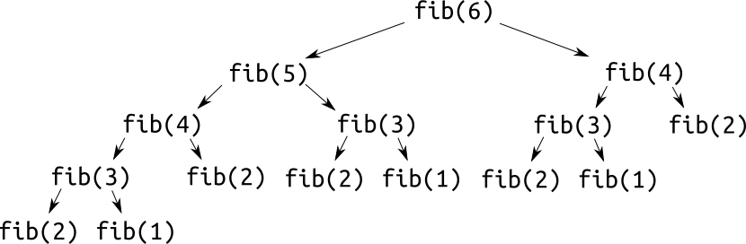
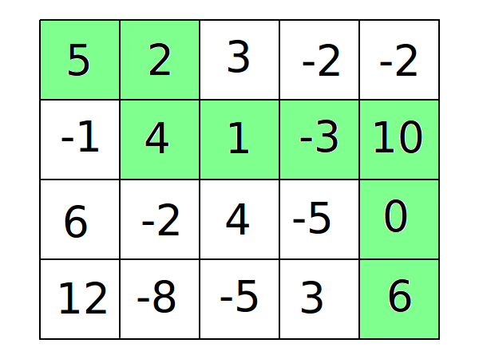
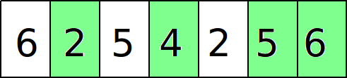

Динамическое программирование – очень широкое понятие, под которое подходит множество алгоритмов, которым посвящены отдельные лекции. Формально, динамическое программирование – способ решения задач с помощью разбиения их на подзадачи и комбинирования ответов на них. Впрочем, для абсолютного большинства людей, не сталкивавшихся раньше с ДП, это определение ничего не объясняет. Попробуем изменить его так, чтобы оно стало немного понятнее, но всё ещё подходило под большинство примеров из олимпиадного программирования:
Динамическое программирование – способ решения задачи с помощью выражения ответа в виде функции от ответов на ту же задачу для других входных данных.
Скорее всего, всё ещё непонятно. Гораздо эффективнее будет привести несколько примеров, начиная с самого элементарного.
Если вы всё же что-то вынесли из приведённого выше определения, то могли заметить, насколько оно похоже на определение рекурсивной функции. На самом деле, ДП – это "всего лишь" способ решения задач на рекурсивные последовательности с сохранением ответа.
Вспомним реализацию расчёта $n$-го числа Фибоначчи из лекции про рекурсию:
int fib(int n) {
if (n < 2) {
return 1;
} else {
return fib(n - 1) + fib(n - 2);
}
}
Мы отмечали, что она не подходит для использования на практике из-за слишком высокой сложности. Откуда же берётся эта сложность? Просто рассмотрим дерево вызовов функции $fib$ для $n = 6$: 
Как видите, для подсчёта $fib(6)$ функцию $fib$ пришлось вызвать 15 раз, хотя логично, что хватило бы шести. Вся проблема заключается в том, что для некоторых $x$ функция $fib(x)$ будет вызываться больше одного раза, и каждый раз высчитываться рекурсивно заново. Очевидно, что для оптимальной работы значения функции нужно сохранять для последующего использования. ДП – один из способов такой оптимизации.
Приведём решение задачи о последовательности Фибоначчи с помощью ДП:
#include <bits/stdc++.h>
using namespace std;
int fib[100001];
int main() {
int n; //N <= 100000
cin >> n;
fib[1] = fib[2] = 1; //начальные значения
for (int i = 3; i < N; i++) {
fib[i] = fib[i - 1] + fib[i - 2]; //формула перехода
}
cout << fib[n]; //вычисление ответа
}
Идея проста: для вычисления $fib(n)$ нам нужны значения $fib(n - 1)$ и $fib(n - 2)$. Давайте просто считать $fib$ в порядке возрастания $n$, сохраняя результаты в массив.
В большинстве случаев ДП характеризуется тремя главными параметрами:
Задачи на поиск оптимального пути в матрице, наверное, самые классические, после задач на последовательность Фибоначчи. В таких задачах каждой клетке в матрице присвоено некоторое число, и нужно найти путь между двумя клетками с максимальной или минимальной суммой.
Приведём решение такой задачи. Будем искать путь между левой верхней и правой нижней клетками с максимальной суммой, если ходить можно только вниз или вправо. Для решения задачи используем следующее ДП: $dp[i][j]$ – максимальная сумма, которую мы можем набрать, дойдя до клетки $(i, j)$. Опишем ДП:
Реализация на C++:
#include <bits/stdc++.h>
using namespace std;
int c[1000][1000];
int dp[1000][1000];
int main() {
int n, m;
cin >> n >> m;
for (int i = 0; i < n; i++) {
for (int j = 0; j < n; j++) {
cin >> c[i][j];
}
}
dp[0][0] = 0;
for (int i = 0; i < n; i++) {
for (int j = 0; j < n; j++) {
if (i || j) { //цикл не должен заходить в клетку (0, 0)
dp[i][j] = INT_MIN; //код рассчёта максимума получился
//достаточно длинным из-за дополнительных
//проверок на выход за границы матрицы
if (i - 1 >= 0) {
dp[i][j] = max(dp[i][j], dp[i - 1][j] + c[i][j]);
}
if (j - 1 >= 0) {
dp[i][j] = max(dp[i][j], dp[i][j - 1] + c[i][j]);
}
}
}
}
cout << dp[n - 1][m - 1];
}
При реализации ДП всегда нужно быть уверенным, что все значения, необходимые для вычисления текущего, уже были вычислены.
Ещё одна классическая задача на ДП. Её формулировка следующая: задана последовательность из N чисел. Нужно удалить из неё минимальное число элементов, чтобы оставшиеся составляли строго (в других версиях – нестрого) возрастающую последовательность.
Например, рассмотрим последовательность $6, 2, 5, 4, 2, 5, 6$. Мы можем вычеркнуть из неё три числа (первая $6$, первая $5$ и вторая $2$) и получить возрастающую последовательность $2, 4, 5, 6$, длина которой $4$. Она является оптимальной, нельзя получить возрастающую подпоследовательность большей длины.
Для решения задачи будем использовать ДП следующего вида: $dp[i]$ – длина наибольшей возрастающей подпоследовательности, оканчивающейся числом $a[i]$. Опишем это ДП:
Возможно, реализация будет немного понятнее:
#include <bits/stdc++.h>
using namespace std;
int a[100000];
int dp[100000];
int main() {
int n;
cin >> n;
for (int i = 0; i < n; i++) {
cin >> a[i];
}
for (int i = 0; i < n; i++) {
dp[i] = 1; //Мы можем начать новую подпоследовательность
for (int j = 0; j < i; j++) {
if (a[j] < a[i]) {
dp[i] = max(dp[i], dp[j] + 1); //Или продолжить уже начатую.
}
}
}
int ans = max_element(dp, dp + n); //C++11
cout << ans;
}
Как можно заметить, сложность такого решения $O(N^2)$. Существует другое решение этой задачи, не такое тривиальное, имеющее имеет сложность $O(N \log N)$. Его можно охарактеризовать как ДП (с натяжкой), но оно значительно отличается от примеров выше. Разберём его.
Будем идти по последовательности слева направо, поддерживая массив $d$, где $d[i]$ – минимальный последний элемент среди всех возможных возрастающих подпоследовательностей длиной $i$. Если таковых не существует, то примем $d[i] = \infty$. Можно достаточно тривиально доказать, что массив $d$ будет строго возрастающим:
По определению d[i] – минимальный последний элемент среди всех подпоследовательностей длиной $i$. Значит, $i$-ый элемент любой подпоследовательности длиной больше $i$ не меньше, чем $d[i]$. Следовательно, не может существовать строго возрастающей подпоследовательности длиной $i + 1$, такой что её последний элемент меньше либо равен $d[i]$, что и требовалось доказать.
Пусть мы обрабатываем очередной элемент $a[i]$, и хотим с его помощью продлить некоторые последовательности. С помощью бинарного поиска найдём в массиве $d$ первый такой индекс $j$, что $a[i] < d[j]$. Утверждается, что элемент $a[j]$. может эффективно продолжить только последовательность длиной $j - 1$. Доказательство:
$a[i] < d[j]$ по определению, а массив $b$ строго возрастает. Чтобы продлить некоторую последовательность, $a[i]$ должен быть строго больше её последнего элемента. Значит, $a[i]$ не может продлить ни одну последовательность длиной $\ge j$.
Чтобы эффективно продлить последовательность длиной $k$ должно выполняться условие $a[i] < d[k + 1]$. Но $a[i]$ по определению больше либо равен $d[j - 1]$, а значит и всем предыдущим значениям. Значит, $a[i]$ не может продлить ни одну последовательность длиной $< j - 1$
Следовательно, если $a[i]$ может эффективно продлить какую-либо последовательность, то её длина равна $j - 1$.
Реализация на C++:
#include <bits/stdc++.h>
using namespace std;
const int INF = 1000000007; //"бесконечность"
int a[100000];
int d[100001];
int main() {
int n;
cin >> n;
for (int i = 0; i < n; i++) {
cin >> a[i];
}
for (int i = 2; i < n; i++) {
d[i] = INF;
}
d[1] = a[0]; //В качестве начального значения, обработаем первый элемент,
//и запишем его как минимальный для длины 1.
for (int i = 1; i < n; i++) {
int j = upper_bound(d + 1, d + n + 1, a[i]) - d; //не забываем сдвинуть индексы.
if (j == 1 || a[i] > d[j - 1]) { //если a[i] строго больше предыдущего элемента, а не равен ему
d[j] = min(d[j], a[i]); //попытаемся с его помощью улучшить ответ для длины j
}
}
for (int i = n; i > 0; i--) { //выводим максимальное i, для которого d[i] не равно бесконечности.
if (d[i] != INF) {
cout << i;
break;
}
}
}
У вас мог возникнуть вопрос: где в этом решении ДП? На самом деле, $d$, хоть и неявно, является рекурсивной функцией, так как $d[i]$ зависит от $d[i - 1]$. Её отличие от нормальных рекурсивных функций заключается в нетрадиционном порядке пересчёта – переборе $a[i]$ c обновлением промежуточных значений $d[j]$, вместо традиционного перебора $dp[i]$.
Собственно, этот алгоритм – плохой пример ДП. Он приведён только для решения задачи за $O(N \log N)$. Даже у опытных программистов могут возникать серьёзные сомнения, причислять ли его к классу ДП.
У этой задачи есть ещё одно решение сложностью $O(N \log N)$, которое может показаться проще. Оно разбирается в лекции про дерево Фенвика.
В качестве последнего примера в этой лекции используем ещё одну часто используемую разновидность ДП – ДП на дереве. Суть алгоритмов от этого не меняется: вместо значения рекурсивной функции для клетки матрицы используется её значение для вершины дерева, которое выражается через значения от других вершин (чаще всего дочерних).
Для реализации ДП на дереве чаще всего используется "настоящая" рекурсия: DFS, поэтому она значительно отличается от классического ДП на массивах.
Давайте решим следующую задачу: каждой вершине дерева присвоено некоторое число (возможно отрицательное). Нужно найти в дереве путь с максимальной суммой вершин (начальные и конечные вершины могут быть произвольными).

ДП будет выглядеть так: $dp[v]$ – сумма наилучшего пути, начинающегося
в вершине $v$, и спускающего вниз по поддереву.
Кроме этого будем считать параметр $ans[v]$, в котором будем хранить ответ
для поддерева вершины $v$, то есть, сумму наилучшего пути, полностью содержащегося
в поддереве $v$.
Рассмотрим эти формулы. $dp[v]$ пересчитывается просто: среди всех дочерних вершин выбираем ту, у которой набольшее значение $dp[u]$, и продолжаем этот путь до вершины $v$. Если это нам невыгодно (сумма у всех путей отрицательная), начинаем новый путь, состоящий только из вершины $v$.
$ans[v]$ пересчитывается немного сложнее. У нас есть три варианта:
Эти три варианта и отображены в формуле.
Реализация на C++:
#include <bits/stdc++.h>
using namespace std;
vector<int> tree[100000];
int c[100000]; //массив со значениями вершин
int dp[100000];
int ans[100000];
void dfs(int v, int p = -1) {
for (int u: graph[v]) { //сначала считаем ДП для всех дочерних вершин
dfs(u, v);
}
//Считаем dp[v]
dp[v] = c[v];
for (int u: graph[v]) {
if (u != p) {
dp[v] = max(dp[v], dp[u] + c[v]);
}
}
//Считаем ans[v]: вариант 1
ans[v] = dp[v];
//Считаем ans[v]: вариант 2
for (int u: graph[v]) {
if (u != p) {
ans[v] = max(ans[v], ans[u]);
}
}
//Считаем ans[v]: вариант 3
if (graph[v].size() >= 3) { //как минимум две дочерних вершины (не считая родительскую)
int f_max = INT_MIN, s_max = INT_MIN; //первый и второй максимумы
for (int u: graph[v]) {
if (u != p) {
if (dp[u] >= f_max) {
s_max = f_max;
f_max = dp[u];
} else if (dp[u] > s_max) {
s_max = dp[u];
}
}
}
ans[v] = max(ans[v], f_max + s_max + c[v]);
}
}
int main() {
//Ввод дерева и массива c...
dfs(0);
cout << ans[0];
}
Если эта задача показалась вам слишком сложной, не расстраивайтесь. Она приведена в этой лекции в качестве "бонусного" материала. Вернитесь к этой теме через пару месяцев.